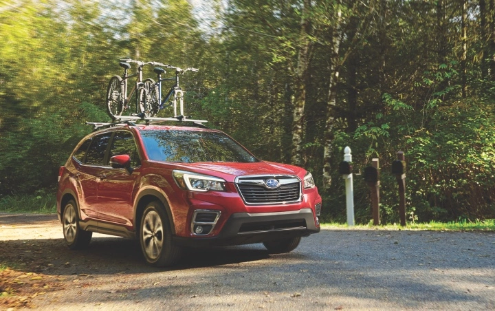
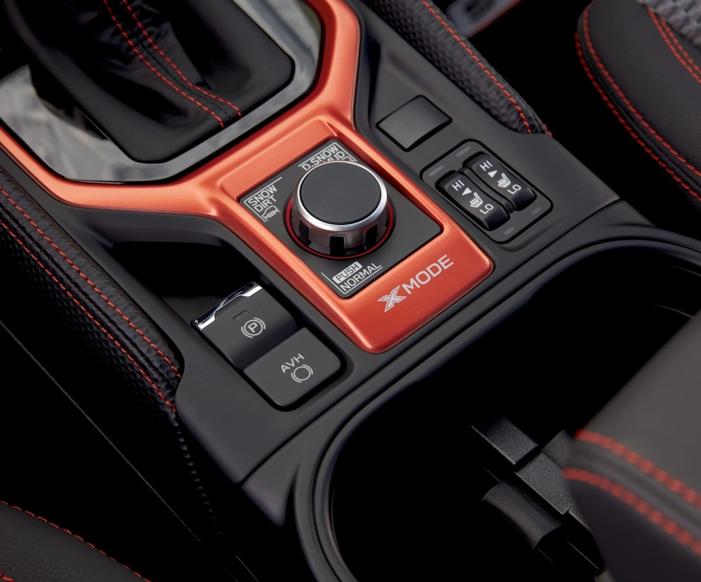
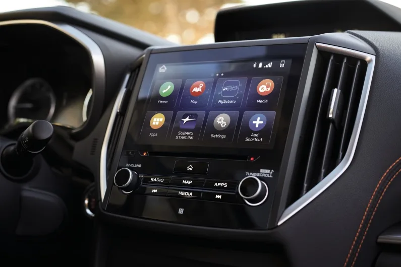
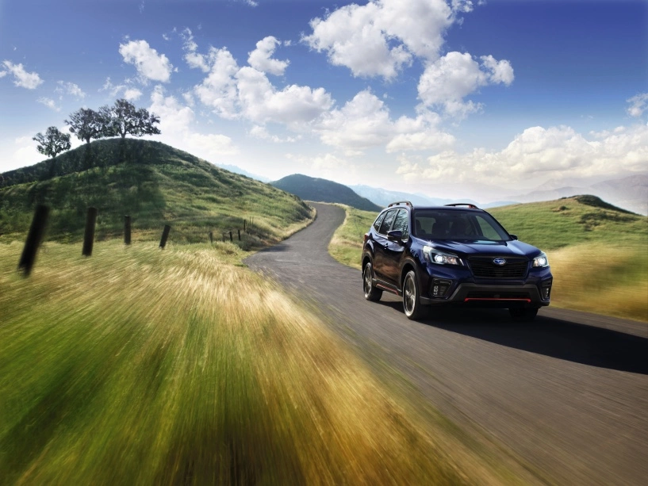
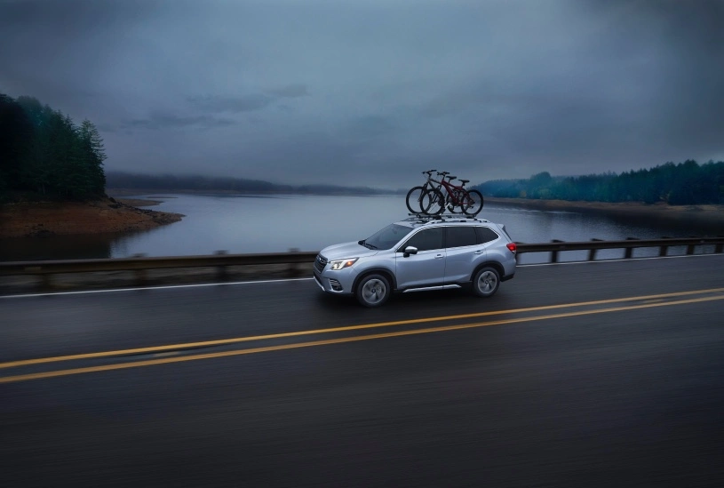
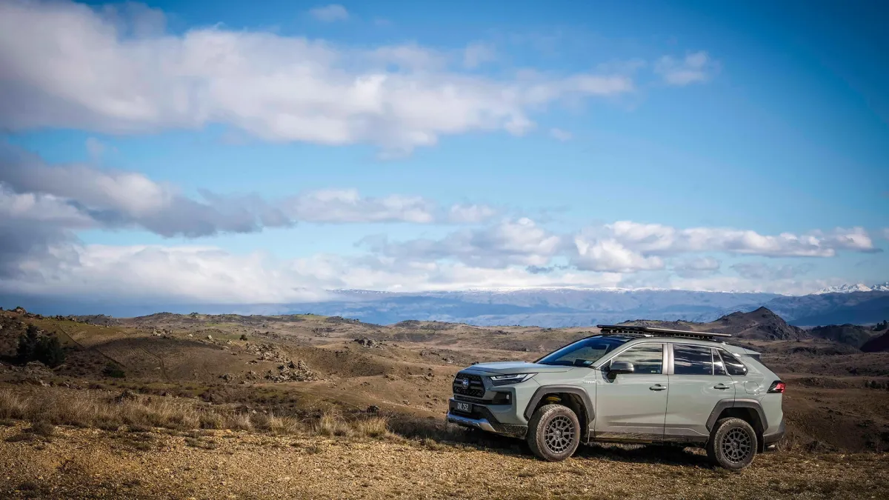

Why Choose ICR?
At Indigo Car Rental, we prioritize your comfort and safety. Our AWD vehicles are meticulously maintained, and our transparent pricing ensures no hidden fees. Whether you’re visiting Kutaisi’s historic sites or venturing into Georgia’s rugged terrain, we’ve got you covered with 24/7 support and flexible rental options.
Our Vehicles
- Modern AWD vehicles for Georgia’s diverse terrain.
- Ideal for mountains, gravel roads, village paths, and city streets.
- Designed for comfort, safety, and confidence.
Select from our top-notch fleet for a smooth ride.
Compact SUVs: Subaru Crosstrek
The Subaru Crosstrek is a compact AWD SUV, perfect for Georgia’s roads, mountains, and adventures. Fuel-efficient and agile, it’s ideal for solo travelers or small groups.
SUVs: Subaru Forester
The Subaru Forester offers AWD performance, ample space, and top safety features—perfect for families or longer trips across Georgia’s diverse landscapes.
SUVs: Toyota RAV4
The Toyota RAV4 combines legendary reliability with AWD capability, a spacious cabin, and a comfortable ride—an excellent choice for families and longer journeys across Georgia.
Pickup Locations
Indigo Car Rental offers convenient pickup and drop-off in Kutaisi, Tbilisi, and Batumi, so you can start your Georgian road trip from wherever you land.
Kutaisi
Pickup and drop-off at Kutaisi International Airport or in the city center—ideal for exploring Imereti, Racha, and western Georgia.
Tbilisi
Pickup and drop-off at Tbilisi International Airport or in the city center—perfect for trips to Kazbegi, Kakheti, and across Georgia.
Batumi
Pickup and drop-off at Batumi International Airport or in the city center—great for the Black Sea coast and trips through Adjara.
Special Offer
Rent for 3+ days and save with our discounted daily rate! Enjoy AWD comfort and reliability on every trip—perfect for exploring Georgia’s hidden gems.
Book NowGallery




Contact Us
Email: info@icrkutaisi.com
Phone: +995 511 55 87 88
Instagram: @indigocarrental
Facebook: Indigo Car Rental